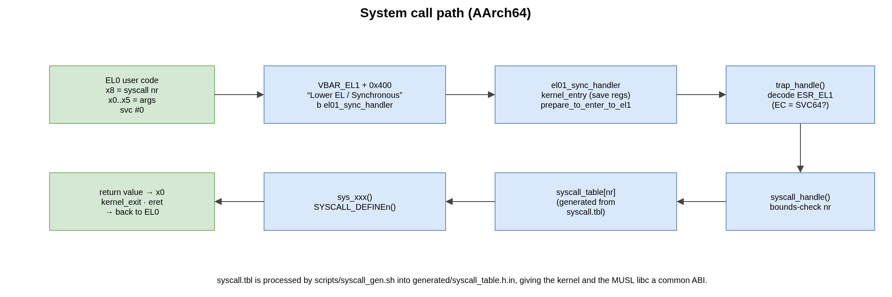
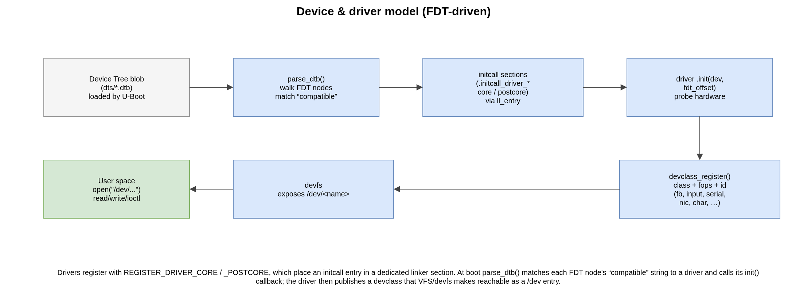

3. Kernel Internals
This chapter describes the main subsystems of the SO3 kernel as they exist in
the source tree. Unless stated otherwise the discussion targets the ARM64
(arch/arm64) port; the ARM32 port follows the same structure with 2-level
page tables and the classic AArch32 register model.
3.1. Memory management
3.1.1. Page-frame allocator
Physical memory is tracked by a frame table (mm/memory.c): an array with
one entry per physical page, recording whether the page is free and its
reference count. The amount of RAM and its base address are obtained from the
device tree at boot (get_mem_info()). get_free_page() returns a free
physical page (the table is protected by a spinlock); pages are released back to
the table when their reference count drops to zero.
3.1.2. Kernel heap
Dynamic kernel allocations use a quick-fit heap (mm/heap.c) sized by
CONFIG_HEAP_SIZE_MB and reserved by the linker script. malloc() /
free() operate on this heap; chunks carry small metadata headers and are
kept on free lists by size.
3.1.3. MMU and address translation
The page tables are built in arch/arm64/mmu.c. On ARM64 SO3 uses up to
four levels (L0–L3) with 4 KiB granularity; the presence of the top L0 level
depends on CONFIG_VA_BITS_48. create_mapping() installs a virtual→
physical mapping in a given page table, allocating intermediate tables as needed
and choosing block (1 GiB / 2 MiB) or page (4 KiB) descriptors according to
alignment and size. The kernel runs from the high half (TTBR1_EL1); each
process has its own low-half table (TTBR0_EL1). See
the address-space section for the layout and the
CONFIG_KERNEL_VADDR values.
3.2. Threads and scheduling
The unit of execution is a thread, described by a Task Control Block
(tcb_t, include/thread.h): thread id, priority, state
(READY / RUNNING / WAITING / ZOMBIE …), a saved CPU context
(cpu_regs_t) and a stack slot. Threads are either kernel threads
(kernel_thread()) or user threads (user_thread()) attached to a
process.
The scheduler lives in kernel/schedule.c. The default policy is
round-robin (CONFIG_SCHED_RR) with timer-driven preemption
(CONFIG_SCHED_FREQ_PREEMPTION); a fixed-priority policy
(CONFIG_SCHED_PRIO) is also available. schedule() selects the next
runnable thread and calls __switch_to() (arch/arm64/context.S), which
saves the callee-saved registers (x19–x29, sp, lr) of the outgoing
thread into its TCB and restores them from the incoming one.
3.3. Processes
A process (pcb_t, include/process.h) owns an address space
(its L0 page table), a heap, a set of file descriptors and one or more threads.
Processes are created by the usual fork() / execve() pair.
The very first process is built by create_root_process()
(kernel/process.c). It maps the compiled-in .root_proc.text trampoline
(__root_proc in arch/arm64/context.S) at USER_SPACE_VADDR
(0x1000) and starts a user thread there. The trampoline immediately issues
an execve("init.elf") so that the first real program is the init process.
ELF binaries are parsed and loaded by fs/elf.c (elf_load_buffer() reads
the file through the VFS; the loadable segments are then mapped into the
process’ address space).
3.4. System calls
User code enters the kernel with the svc instruction. The system-call number
is passed in x8 and the arguments in x0–x5 (AArch64 ABI).
{kind=link}

Fig. 3.1 The AArch64 system-call path.
The svc traps to the Lower EL / Synchronous slot of the EL1 vector table
(VBAR_EL1 + 0x400, arch/arm64/exception.S), which branches to
el01_sync_handler. That handler saves the user context and calls
trap_handle() (arch/arm64/traps.c), which decodes ESR_EL1; for an
SVC64 exception it forwards to syscall_handle() (kernel/syscalls.c).
The dispatch table syscall_table[] is generated at build time from
syscall.tbl by scripts/syscall_gen.sh (producing
generated/syscall_table.h.in), giving the kernel and the MUSL libc a common
ABI. Each entry is a sys_xxx() function declared with the
SYSCALL_DEFINEn() macros. The return value is placed back in x0 and the
handler erets to EL0.
Warning
The vector table must contain all 16 architectural slots, correctly
spaced. Omitting a slot (for instance behind a bare #ifdef CONFIG_AVZ)
shifts the lower-EL vectors and silently misroutes svc to the wrong
handler — see the SError slot in arch/arm64/exception.S.
3.5. Inter-process communication
The ipc/ directory provides:
signals (
signal.c) — POSIX-like signals checked on return to user space;rt_sigaction(),kill(), signal masks, default actions;pipes (
pipe.c) — in-kernel FIFOs with blocking read/write backed by completions;semaphores (
semaphore.c) and completions (completion.c) — the kernel’s synchronisation primitives, also used internally by drivers and the scheduler.
3.6. Virtual filesystem
The VFS (fs/vfs.c) maintains a global file-descriptor table; each
process maps its local descriptors (pcb->fd_array) onto global ones. File
operations are dispatched to the filesystem that owns the file. The kernel
registers:
FAT (
fs/fat/) — a FAT driver used for the root filesystem, whether it is a RAM disk (CONFIG_ROOTFS_RAMDEV) packed in the FIT image, or an MMC card (CONFIG_ROOTFS_MMC);devfs (
fs/devfs/) — a virtual filesystem that exposes registered devices under/dev.
vfs_init() is called early in kernel_start() and sets up these
filesystems before the root process is launched.
3.7. Device and driver model
SO3 uses a device-tree-driven driver model.
{kind=link}

Fig. 3.2 From the device tree to a /dev entry.
Drivers register with the REGISTER_DRIVER_CORE / REGISTER_DRIVER_POSTCORE
macros, which place an initcall entry into a dedicated linker section
(.initcall_driver_initcall_t_core / …_postcore in the linker script,
reached at runtime through the ll_entry_* helpers). At boot,
parse_dtb() (devices/) walks the flattened device tree, matches each
node’s compatible string against the registered drivers and calls the
driver’s init(dev, fdt_offset) callback. A driver then publishes a
device class (devclass) with its file operations and a device-id range;
devfs makes it reachable as /dev/<name>.
The tree contains drivers for the main device classes:
Class ( |
Drivers |
|---|---|
interrupt controller ( |
ARM GIC (v2/v3), and the virtual GIC for AVZ (see AVZ Hypervisor) |
timer ( |
ARM generic timer ( |
serial ( |
PL011, NS16550, i.MX UART |
storage ( |
SD/MMC controller, in-memory RAM disk |
framebuffer ( |
PL111, ramfb, virtfb (used by LVGL) |
real-time clock ( |
PL031 — provides the wall-clock time behind |
input ( |
PL050 KMI keyboard; |
network ( |
smc911x ( |
i2c, rpisense ( |
I²C bus and Raspberry Pi Sense HAT |
example ( |
a minimal reference driver, exercised by the |
3.8. Interrupts and time
The exception vectors are installed at VBAR_EL1 (arch/arm64/exception.S).
Hardware interrupts are handled by the GIC driver (devices/irq/gic.c):
on an IRQ the handler reads the interrupt acknowledge register, dispatches to the
registered handler and signals end-of-interrupt. In the standalone (EL1)
configuration the CPU interface uses EOImode = 0 (a single EOIR write
both drops priority and deactivates the interrupt). The AVZ (EL2) configuration
uses EOImode = 1 and the virtual GIC to forward interrupts to guests — see
AVZ Hypervisor.
Time is provided by the ARM generic timer (devices/timer/arm_timer.c). A
periodic tick drives the scheduler; calibrate_delay() (run once during
bring-up) waits for the first ticks to compute the busy-loop delay constant.
3.9. Networking
SO3 integrates the lwIP TCP/IP stack (net/lwip/). The kernel exposes a
BSD-style socket API; the net/ glue maps VFS file descriptors onto lwIP
sockets so that socket() / bind() / connect() / send() /
recv() work from user space. Networking is opt-in (CONFIG_NET, off in
the default virt64_defconfig); the NIC driver in devices/net/ is an
smc911x (smsc,smc911x) MAC. See lwIP — Lightweight IP.